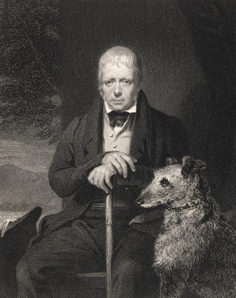

<< Back

Frontispiece to: Sir Walter Scott, Rokeby: A Poem (London: Tilt and Bogue, 1841)
Holl's engraving of the 1830 painting by Sir John Watson Gordon was subsequently published in Taylor's National Portrait Gallery (London: Fisher, 1846).